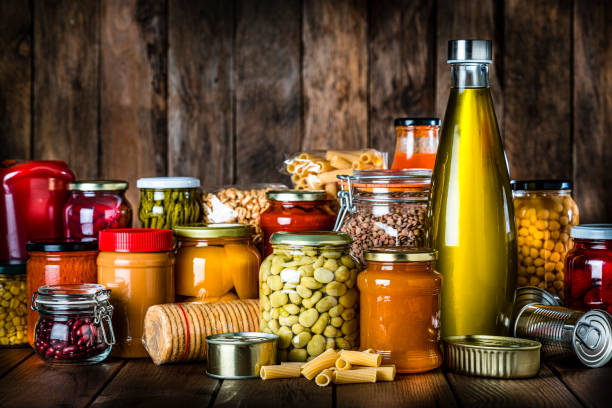

R V College of Engineering
DONATE NOW
Your generous contribution will make a significant impact on our organization's mission to promote safe food preservation practices.
By donating, you will be supporting two crucial areas: student scholarships and research projects. Your funds will directly benefit aspiring students who are passionate about food safety and preservation, providing them with the necessary financial assistance to pursue their educational goals. Additionally, your donation will contribute to research projects that enhance our understanding of food preservation techniques, new appliances, and safety protocols.
Every dollar counts and helps us continue our vital work in educating the public about safe food preservation practices. Your contribution will empower future generations of food preservation experts and contribute to the advancement of research in this field.
Thank you for considering a donation. Together, we can make a lasting impact on the preservation of our food heritage and the well-being of communities around the world.
By donating, you will be supporting two crucial areas: student scholarships and research projects. Your funds will directly benefit aspiring students who are passionate about food safety and preservation, providing them with the necessary financial assistance to pursue their educational goals. Additionally, your donation will contribute to research projects that enhance our understanding of food preservation techniques, new appliances, and safety protocols.
Every dollar counts and helps us continue our vital work in educating the public about safe food preservation practices. Your contribution will empower future generations of food preservation experts and contribute to the advancement of research in this field.
Thank you for considering a donation. Together, we can make a lasting impact on the preservation of our food heritage and the well-being of communities around the world.

SO EASY TO PRESERVE
Here are some recommended books!
 The ABC'S of Canning and Preserving: Everything You Need to Know By Cassandra Williams
The ABC'S of Canning and Preserving: Everything You Need to Know By Cassandra Williams Preserving by Karen K. Brees
Preserving by Karen K. Brees